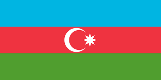
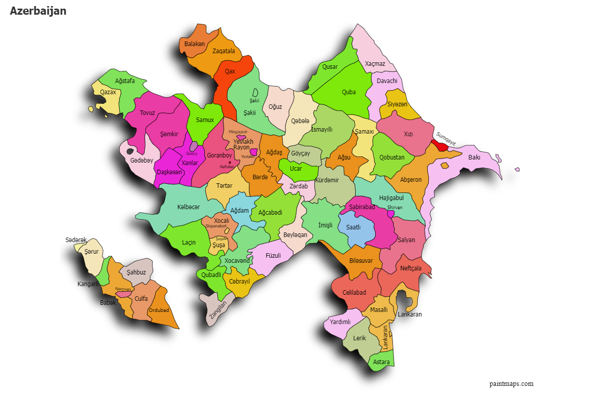
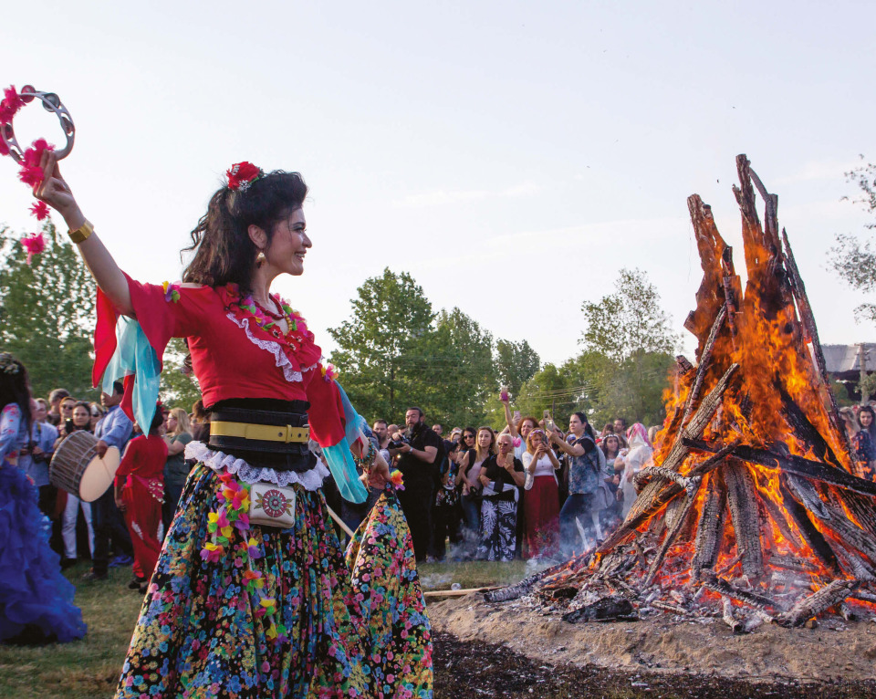
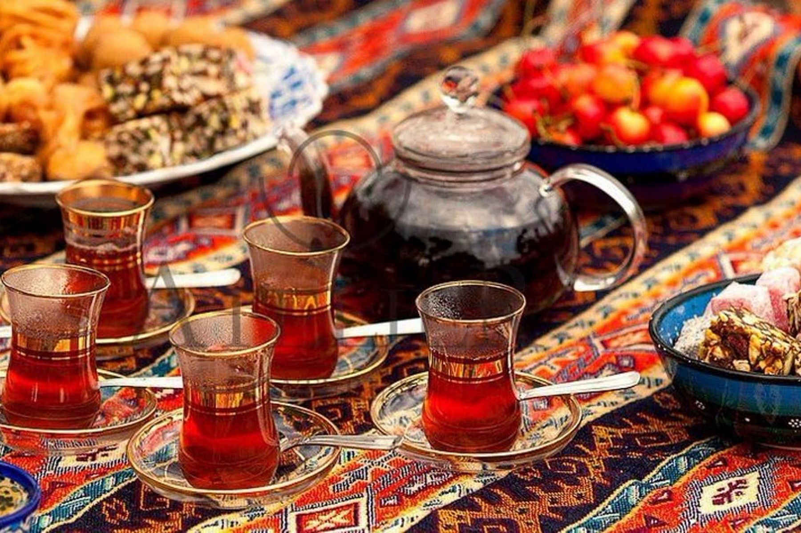
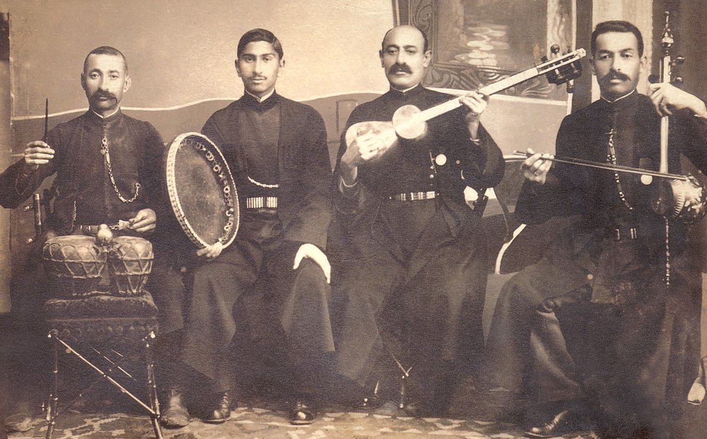
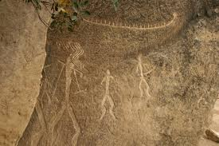
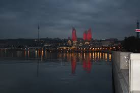
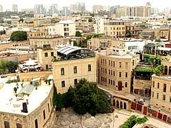

Azerbaycan
Başkent: Bakü
Yüzölçümü: 86.600 km²
Nüfus: Yaklaşık 10 milyon
Para Birimi: Azerbaycan Manatı (AZN)
Azerbaycan, Güney Kafkasya’da yer alan, Hazar Denizi’ne kıyısı bulunan, zengin doğal kaynaklara sahip bir ülkedir. Türk dili konuşan halkı, tarihi bağları ve kültürel yakınlığı ile Türkiye’ye dost bir ülkedir. Bakü, hem tarihi dokusu hem de modern yapıları ile öne çıkan başkentidir.
İklim ve Coğrafya
Coğrafya: Azerbaycan, Güney Kafkasya bölgesinde yer almaktadır ve doğuda Hazar Denizi'ne kıyısı vardır. Ülke, farklı coğrafi bölgeleri içerir; kuzeyde dağlık alanlar, güneyde ise daha düz ve verimli topraklar bulunmaktadır. Azerbaycan, zengin doğal kaynaklara sahip olup, petrol ve doğalgaz rezervleri ile ünlüdür.
İklim: Azerbaycan'da iklim çeşitlilik gösterir. Karadeniz'e kıyısı bulunan bölgelerde ılıman iklim hakimken, iç bölgelerde daha sert kara iklimi görülmektedir. Ülkenin güneyi subtropikal iklimin etkisi altındayken, dağlık bölgeler ise soğuk iklim koşullarına sahiptir. Yazlar sıcak ve kurak, kışlar ise soğuk geçmektedir.

Azerbaycan'ın bölgesel haritası
Tarihi Gelişmeler
Antik Dönem: Azerbaycan toprakları, tarih öncesi çağlardan itibaren yerleşim görmüş ve çeşitli medeniyetlere ev sahipliği yapmıştır. Albanya Krallığı, bölgede bilinen ilk devletlerden biridir.
İslamiyet’in Yayılması: 7. yüzyılda Arapların bölgeyi fethetmesiyle İslamiyet yayılmıştır. Bu dönem, kültürel ve dini açıdan büyük değişimlere sahne olmuştur.
Safevî ve Osmanlı Dönemleri: 16. yüzyılda Azerbaycan toprakları Safevîler ile Osmanlılar arasında çekişmelere konu olmuş, zamanla farklı dönemlerde her iki imparatorluğun kontrolü altına girmiştir.
Rus İmparatorluğu ve Sovyetler: 19. yüzyılda Çarlık Rusyası’nın egemenliğine giren Azerbaycan, 1920 yılında Sovyetler Birliği’nin bir parçası haline gelmiştir.
Bağımsızlık: 1991 yılında Sovyetler Birliği'nin dağılmasıyla Azerbaycan bağımsızlığını ilan etmiştir. Ardından Dağlık Karabağ sorunu nedeniyle Ermenistan ile çatışmalar yaşanmıştır.
Modern Dönem: 2000’li yıllardan itibaren Azerbaycan, enerji kaynaklarına dayalı ekonomisiyle gelişme göstermiş, aynı zamanda Karabağ bölgesiyle ilgili sorunlarda çeşitli diplomatik ve askeri gelişmeler yaşamıştır.
Bayramlar:
Azerbaycan'da en önemli milli bayramlardan biri 28 Mayıs Cumhuriyet Günü’dür. Bu gün, 1918'de kurulan Azerbaycan Demokratik Cumhuriyeti'nin ilanını anmak için coşkuyla kutlanır. Ayrıca 18 Ekim Bağımsızlık Günü, halkın ulusal birlik ve özgürlük duygusunu pekiştirdiği bir diğer önemli tarihtir. Dini bayramlar arasında ise Nevruz öne çıkar; baharın gelişini simgeleyen bu bayramda halk, ateş üzerinden atlama, yumurta boyama ve çeşitli gösterilerle kutlamalar yapar.

Çay İkramı:
Azerbaycan kültüründe çay, sadece bir içecek değil, aynı zamanda misafirperverliğin ve dostluğun bir göstergesidir. Gelen misafire ilk sunulan şey çaydır. Nane veya limonla servis edilen çay yanında genellikle reçel ikram edilir. Uzun sohbetlerin ayrılmaz bir parçasıdır.

Mugam:
Mugam, Azerbaycan’a özgü geleneksel ve klasik müzik türlerinden biridir. Usta sanatçılar tarafından icra edilen mugamlar, hem şiirsel hem de doğaçlamaya açık yapılarıyla dikkat çeker. Saz, kamança ve tar gibi geleneksel enstrümanlarla seslendirilir ve kültürel kimliğin önemli bir parçasıdır.


Gobustan Kaya Resimleri - Azerbaycan
Gobustan Kaya Resimleri, Azerbaycan'ın Gobustan bölgesinde yer alan, MÖ 5. binyıla tarihlenen kaya üzerine işlenmiş resimlerden oluşan bir arkeolojik alandır. UNESCO Dünya Mirası Listesi'nde yer alan bu site, erken insanlar hakkında önemli bilgiler sunar ve bölgenin tarihini anlamak için eşsiz bir kaynaktır.

Alev Kuleleri - Azerbaycan
Bakü'nün simgelerinden biri olan Alev Kuleleri, modern mimarinin harika örneklerinden biridir. Bu üç ikonik gökdelen, ateşi simgeleyen bir tasarıma sahiptir ve şehri geceleyin aydınlatan büyük birer ışık kaynağıdır. Hem iş merkezi hem de otel olarak kullanılan bu yapılar, Azerbaycan'ın hızla gelişen yüzünü temsil eder.

Old City - Azerbaycan
Bakü'nün tarihi merkezi olan İçerişehir, UNESCO Dünya Mirası Listesi'nde yer alır. Şehir, dar sokakları, tarihi camileri, sarayları ve surlarıyla ünlüdür. Burada yer alan Şirvanşahlar Sarayı ve Kız Kulesi, Azerbaycan'ın tarihini ve kültürünü yansıtan önemli yapılar arasında yer alır.